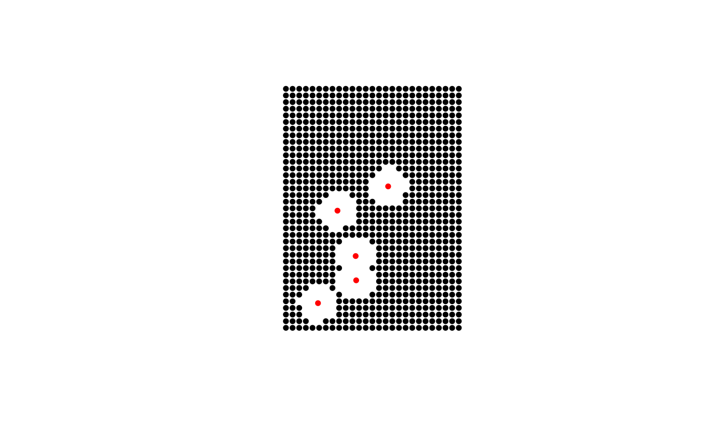
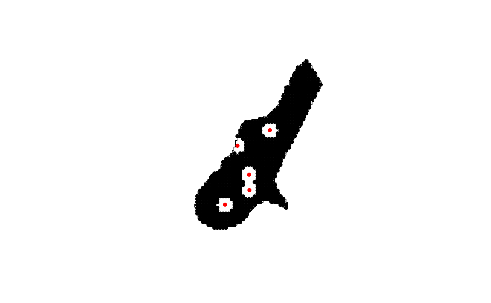
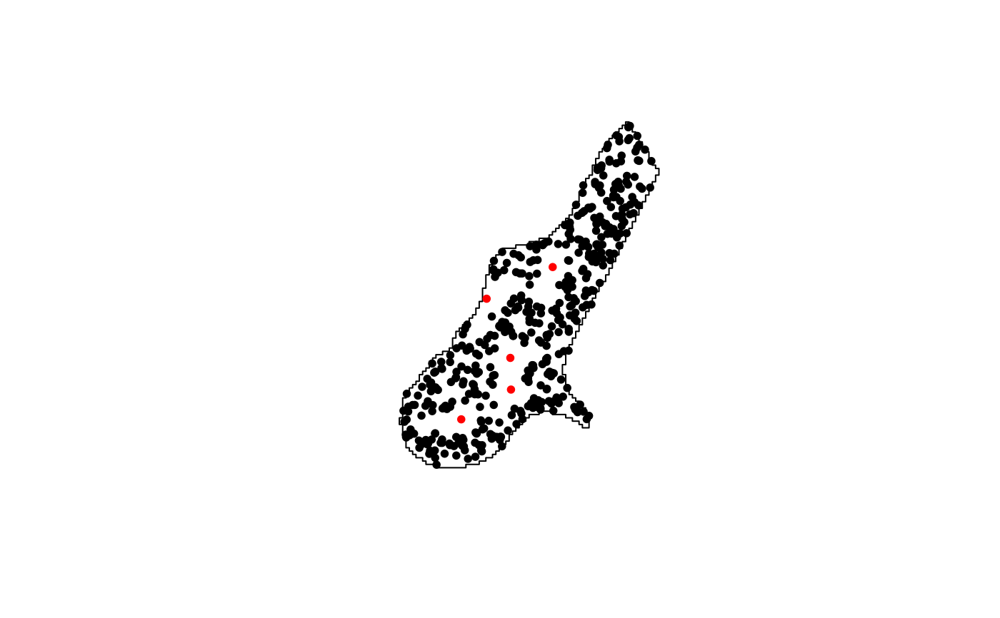
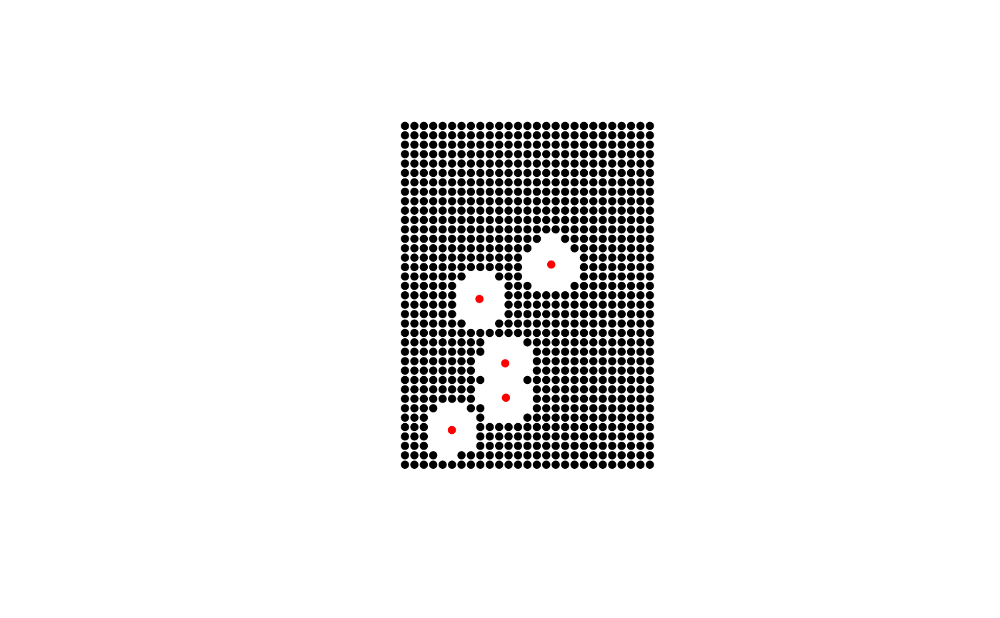

Creates a point sample that can be used as a NULL for SDM's and other modeling approaches.
background( x, ext = NULL, p = 1000, known = NULL, d = NULL, type = c("regular", "random", "hexagon", "nonaligned") )
| x | A polygon defining sample region |
|---|---|
| ext | Vector of extent coordinates (xmin, xmax, ymin, ymax) |
| p | Size of sample |
| known | SpatialPoints of known locations (same CSR as x) |
| d | Threshold distance for known proximity |
| type | Type of sample c("systematic", "random", "hexagon", "nonaligned") |
A SpatialPointsDataFrame or data.frame with x,y coordinates
This function creates a background point sample based on an extent or polygon sampling region. The known argument can be used with d to remove sample points based on distance-based proximity to existing locations (eg., known species locations). The size (p) of the resulting sample will be dependent on the known locations and the influence of the distance threshold (d). As such, if the know and d arguments are provided the exact value provided in p will not be returned.
Jeffrey S. Evans <jeffrey_evans@tnc.org>
#> #>#> #> #>#> Warning: package 'rgeos' was built under R version 4.0.5#> #> #> #>data(meuse) coordinates(meuse) <- ~x+y # create "known" locations locs <- meuse[sample(1:nrow(meuse), 5),] # systematic sample using extent polygon e <- as(extent(meuse), "SpatialPolygons") s <- background(e, p=1000, known=locs, d=300) plot(s,pch=20)# systematic sample using irregular polygon data(meuse.grid) coordinates(meuse.grid) = c("x", "y") gridded(meuse.grid) = TRUE meuse.poly = gUnaryUnion(as(meuse.grid, "SpatialPolygons")) s <- background(meuse.poly, p=1000, known=locs, d=200) plot(s,pch=20)# random sample using irregular polygon s <- background(meuse.poly, p=500, known=locs, d=200, type="random") plot(s,pch=20)#> class : Extent #> xmin : 178605 #> xmax : 181390 #> ymin : 329714 #> ymax : 333611